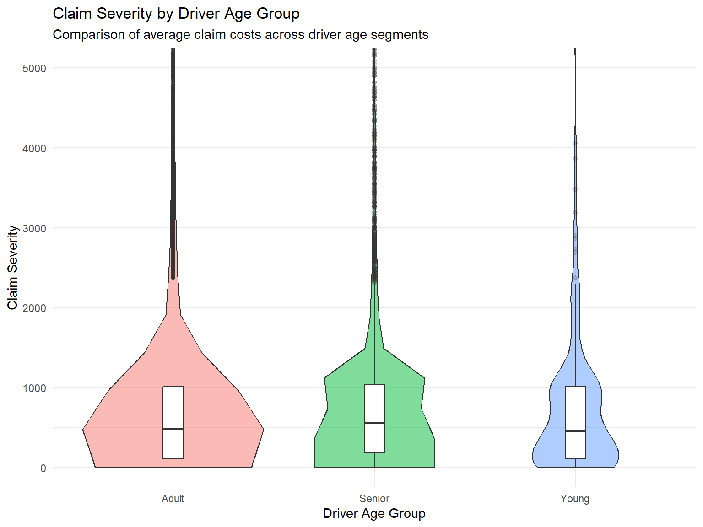

Take-Home Exercise 1 Executive Summary
2026-05-09
Univariate Visual Analysis: Financial Variables

Key Findings
Total premium distribution is highly right-skewed
Majority of claims are relatively small
Severe claims create long-tail risk exposure
Loss ratios are generally concentrated at lower values
Implication
Portfolio appears broadly profitable but exposed to extreme claim events
Univariate Visual Analysis: Portfolio Composition

Portfolio Characteristics
CC policies dominate the portfolio
New business policies exceed portfolio renewals
Most policies remain active
Majority of policies are classified as profitable
Implication
Portfolio is concentrated in selected products and customer segments
Bivariate Visual Analysis: Risky Segments

Heatmap & Treemap Findings
COMP_N under business type P shows highest average loss ratio
CC policies demonstrate stronger profitability
Smaller segments may still generate disproportionate risk
Implication
Underwriting profitability differs substantially across portfolio segments